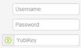

Yubico OTP is a simple yet strong authentication mechanism that is supported by all YubiKeys out of the box. Yubico OTP can be used as the second factor in a 2-factor authentication scheme or on its own, providing 1-factor authentication.
The most common pattern is to use Yubico OTP in combination with a username and password:

YubiCloud is the name of Yubico’s web service for verifying OTPs. Before using YubiCloud, you need to get an API key from here — it’s quick, free and helps us preventing misuse of YubiCloud.
If you prefer to not use YubiCloud, you can instead host a verification server yourself.
Apart from the general advantages of 2-factor authentication, Yubico OTP has the following characteristics:
No client software needed. The OTP is just a string. If you can send a password, you can send an OTP.
YubiKey ID embedded in OTP. This allows for self-provisioning, as well as authenticating without a username.
Easy to implement. Using YubiCloud, supporting Yubico OTP is not much harder than supporting regular passwords.
We provide two alternatives:
Integration plugins for software such as Wordpress, phpBB and PAM. This should be the easiest alternative if you are using supported software.
Libraries for programming languages used to create your own integration.
While not required, it can be interesting and useful to know how a Yubico OTP is generated. This is explained in OTPs explained.